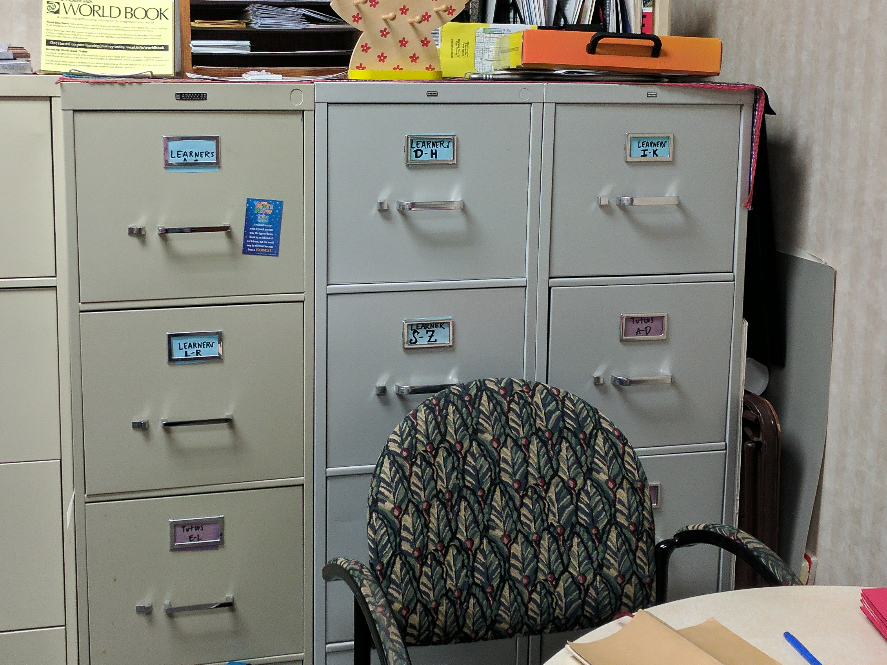
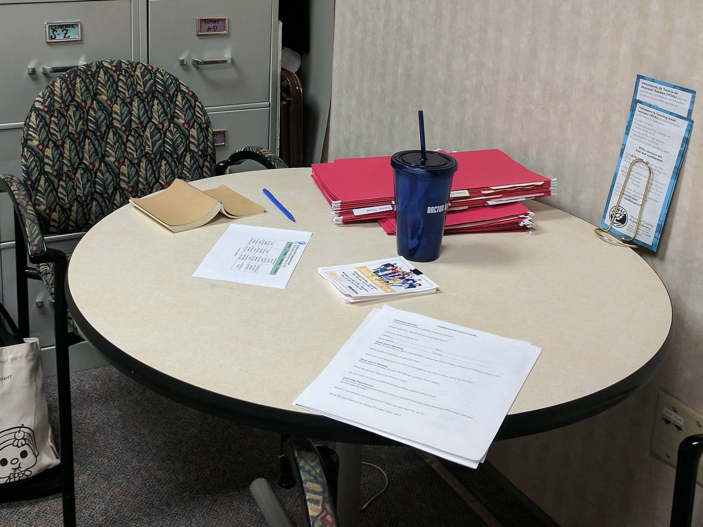
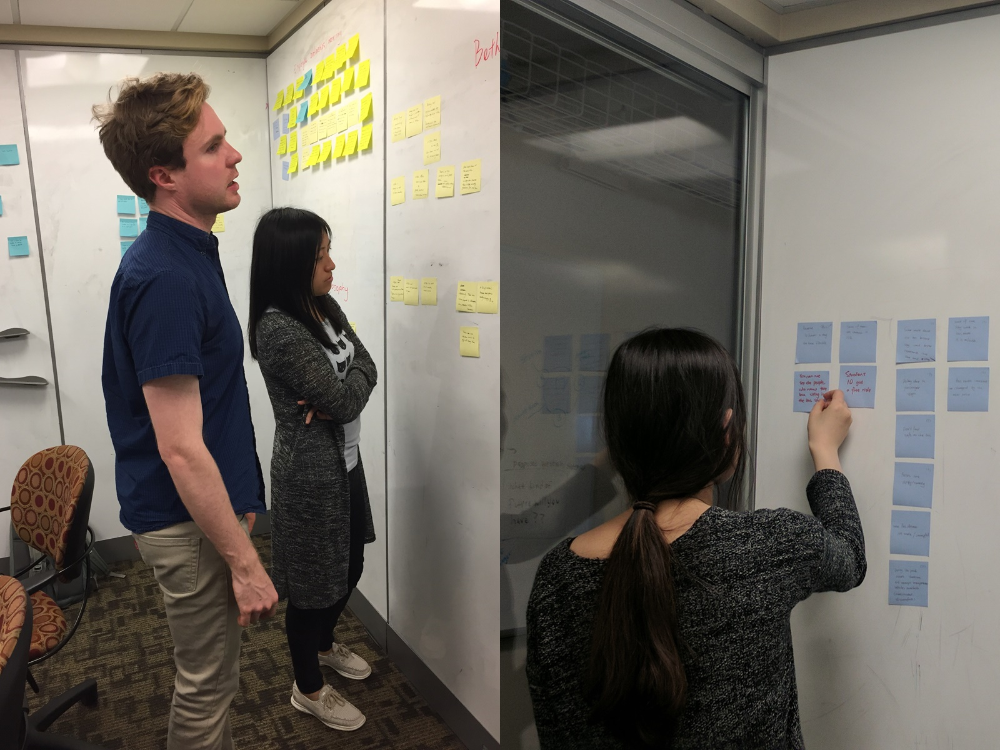
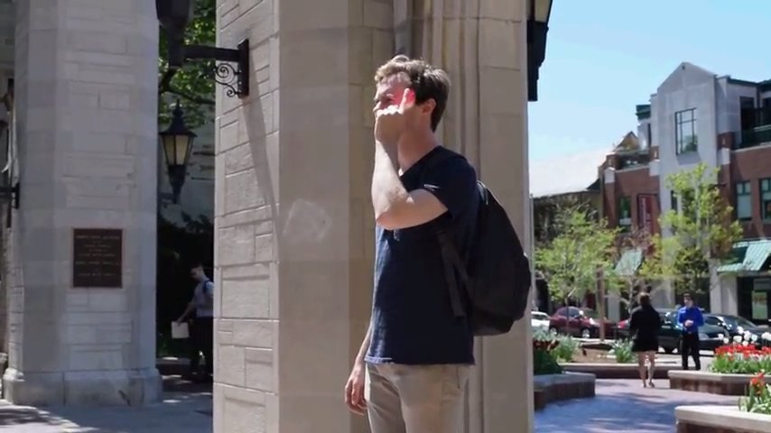
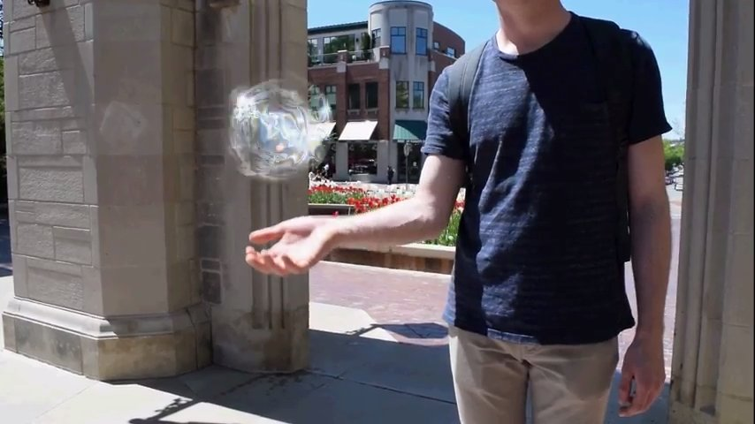
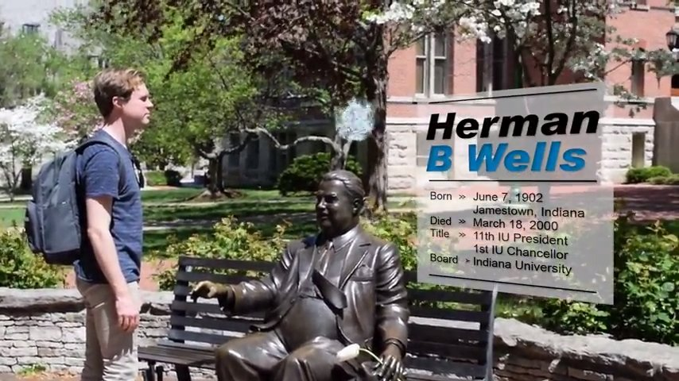

Contextual Inquiry, Affinity Diagram, Ideating, Sketching, Film Directing / Filming / Editing
Role
Background
Challenge
How will Bloomington look in 2050?
For this project, we were asked to develop a design fiction in the form of a Visitor's Guide that communicates the vision of future Bloomington in 2050 as a smart and connected community. We were required to conduct contextual inquiry, construct affinity diagram, and generate concepts based on the insights we got from it.
Approach
To learn more about how Bloomington is now and to explore potential design space for the future, we each focused on a particular domain in the city to conduct contextual inquiry as instructed in the design brief.
The domain and participant we each worked with are:
- Cameron: Service - Ann from The FoxHole
- Peggy: Communication - Bethany from VITAL
- Brian: Food - Matt from Baked
- Tian: Transportation - Uber driver & Bus driver
Some preperation we had as a group before going into individual contextual inquiry (CI) sessions were to clarify our understanding of smart and connected community. We also brainstormed and decided on some focuses and strategies for the CIs, such as how their practice can be related to smart & connected community, and to pay attention to the activities, actors, artifacts, time/space that are involved in the participants' practices.
Contextual Inquiry
Identifying Participants
As mentioned above, the domain I was in charge of is Communication, and I ended up did my contextual inquiry with Bethany Terry, the coordinator of Volunteers In Tutoring Adult Learners (VITAL) program at Monroe County Public Library.
Besides my interest & background in the library field, what motivated me to work with Bethany was under the consideration that education and literacy would be some of the key factors contributing to the success of the developement of smart cities.
Learning about Bethany & VITAL
For the contextual inquiry, I met with Bethany twice in total, to shadow her work during the volunteer orientation and to interview her in her office.


Shadowing Volunteer Orientation
Duration: 1.5 hr
Goals:
- Getting an overview of VITAL
- See how Bethany interact with the volunteers
I sat in during the monthly orientation with other voluteers, learning about VITAL, following the group while Bethany gave them a tour of the library, and observing the interaction between Bethany and the volunteers.

Bethany in her office.

Fourty-years of tutors and learners' records archived in Bethany's office.

Files, record sheets, educational materials, board games provided for tutors in VITAL office.

Bethany usually have informal meetings with the tutors individually when they start the program in her office.
Interview in Bethany's Office
Duration: 40 mins
Goals:
- Learn how Bethany usually did her work
- Observe VITAL office, including tools used, layout, environment, etc.
Bethany and I sat in her office the day after the orientation, talking about VITAL, her beliefs and vision for the program. I also asked her questions based on what I learnt during the orientation and the artifacts in her office, such as the archives of tutors/learners record, waiting lists on her desk, and the resources in VITAL's collection room.
Affinity Diagram
To construct the affinity diagram, we started by generating individual post-it notes based on the data points we got from our CI sessions respectively. After getting together as a group, we started with reviewing each others' items, making sure there was no cofusion while looking for patterns together.
1st Round: Categorizing
The categories we came down with are: Ideas/Goals/Philosophy, Movement, Schedule, Space/Place, Employee Relationships/Hierarchy, Supplementary Services, Internal/External Communication, Technology.

2nd Round: Differential
After putting most of our post-it notes into categories, we had another session to further explore each category respectively. In order to look for breakdowns in current processes and to identify possible design spaces, we placed the post-it notes from each category onto the grid with x-axis being low to high tech and y-axis being low to high efficacy.
The differential of levels of technology adoption and efficacy was inspired by our discussion regarding the technology category we had last time. We found that for some of the services while using low tech solutions, they achieved high efficacy, and vice versa for some others.

Insights
Below are some of the insights we got from the categorization and differential sessions:
- Payment systems are potentially ripe for technological enhancement/innovation.
- Services (Food, grooming) utilize low tech solutions with high efficacy.
- Communication / Relationship rely a lot on a person-to-person interaction.
How do we preserve that in the future with robots? - Adding tech to a problem space doesn’t always increase efficacy.
- People prefer to have a personal touch with supplementary services.
Ideation
Individual Ideating
Based on insights, we generate design concepts that yield for the four domains respectivity on our own, resulting in more than 20 design concepts.
Group Iteration
We then iterated on all the concepts together, the process included:
- Going over each of us's concepts & getting feedbacks from each other,
- Strenghthening their connection to the insights,
- Combining them into more fleshed-out ideas,
- Speculating how technology would be in 2050.
By the end, we narrowed down some themes we aimed to portray in our design fiction. Following are the themes that we decided on:
- Utilizing predictive data
- Adding a "personal touch" to the data
- Focus on community-enhancing and facilitate social connection
- Using AR but not VR, as the latter disconnect would disconnect the travelers from the physical reality from them.
Video: Bloomington in 2050
Final Concepts

AR Contacts
The equivalant to smartphone in 2050. We envision augment reality contacts to be the commonly used smart device in the future.
It will provide a mean to access data, information and the designs we speculated below. Features can be (de)activated with different patterns of tapping on one's temple.

ORBIE
ORBIE is a personal travel companion that can be accessed through augment reality. It provides local information, and connect visitors to local residents who match their needs and interests.
During their time in Bloomington, ORBIE would float around the visitors and lead them to targets, probing them to interact with the person, artifacts, and the environment.

Embedded Information
Interactive information layer embedded in physical environment with triggers in physical environment.